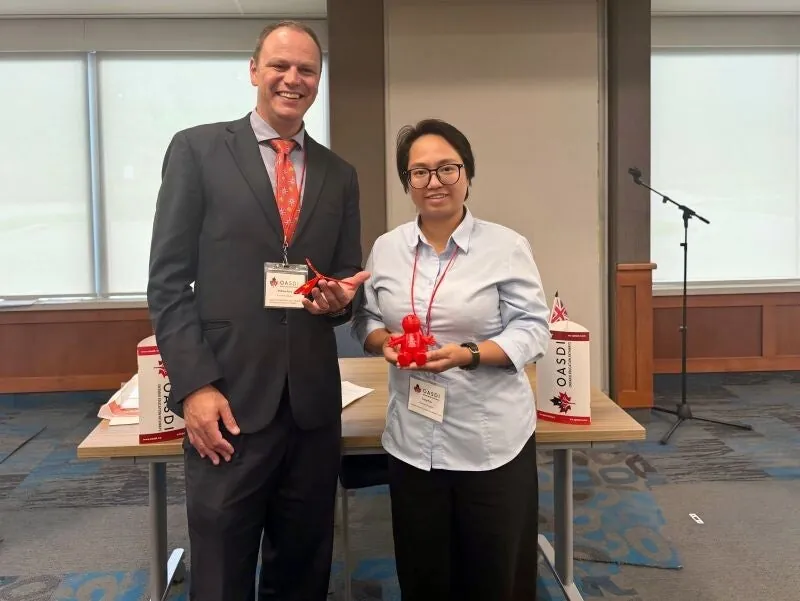

TORONTO, June 12, 2026 — The Canada Vietnam Cultural & Educational Council (CVCEC) took part in the 8th Ontario K-12 International Education Conference, where it sponsored the conference’s global education roundtable.
During the conference, CVCEC founder and president Phan Thi Quynh Trang met with Christine Riedel of the Ontario Ministry of Education and Matthew Raby, president of the Ontario Association of School Districts International (OASDI). Their discussions focused on aligning collaboration between organizations with provincial education policy.
Data shared by Ontario public school boards at the conference showed that Vietnam is now one of the top two source countries for international students in Ontario’s public school system.
The opening ceremony also recognized a Vietnamese student who is now doing an internship at Sheridan College and has a grade point average of 3.91.
CVCEC said it will continue to support school boards by giving Vietnamese families accurate, evidence-based information about Ontario’s public education system, helping them choose safe and reliable pathways and avoid substandard programs marketed through misleading channels.



About CVCEC
The Canada Vietnam Cultural & Educational Council (CVCEC) is a federally incorporated not-for-profit organization based in Toronto. It offers Vietnamese language and culture classes for children, helps newcomer and international students settle into Canadian schools and connects education communities in Canada and Vietnam. More information is available at cvcec.org.
-30-
Media contact
Phan Thi Quynh Trang, founder and president
Canada Vietnam Cultural & Educational Council
contact@cvcec.org